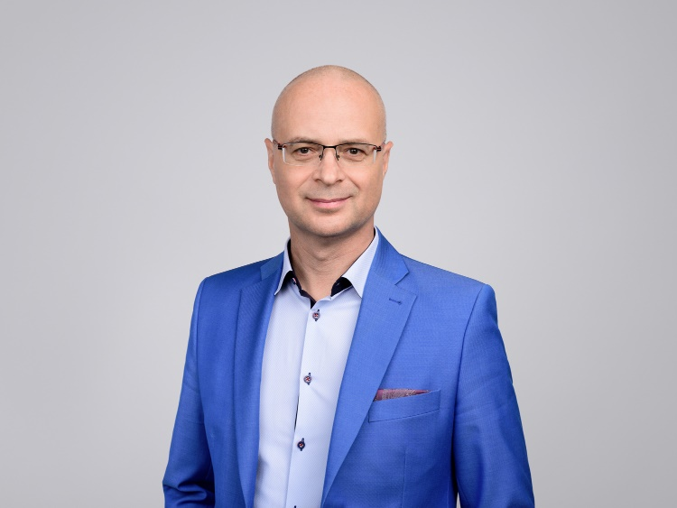

Praktiniai patarimai valstybinėms ir savivaldybės įstaigoms bei verslo įmonėms iš profesionalių teisininkų bei teisėsaugos ekspertų
Kiekvienas TAI privalo žinoti ir jaustis SAUGIAI priimant sprendimus
Seminaro tikslas
Suteikti žinių, kurios padėtų valstybinėse įstaigose bei versle dirbantiems žmonėms išvengti nesąmoningų klaidų, kurios būtų traktuojamos kaip finansiniai pažeidimai ar net korupcija ir užtrauktų tam tikrą atsakomybę.
Išaiškinti, akcentuojant bausmės neišvengiamumo principą, kad bet koks sąmoningas veikimas, bandant nesąžiningai elgtis finansų srityje ar vykdant korupcinio pobūdžio veikas, vėliau ar anksčiau bus išaiškintas ir už tai teks atsakyti.
Taip pat suteikti elementarias bazines žinias apie teisėsaugos bei valstybės kontrolės institucijas, jų struktūrą, tarpusavio bendradarbiavimą ir patikrinimo etapus, kad nebūtų sąmoningo ar nesąmoningo klaidinimo iš įvairių teisininkų ar advokatų.
Seminaro metu sužinosite
Kokios yra teisėsaugos bei kitos kontroliuojančios institucijos, kurios tiria finansinius nusikaltimus ar korupcijos atvejus.
Kada ir kodėl šios institucijos gali pradėti patikrinimus ar ikiteisminius tyrimus Jūsų įmonėje arba įstaigoje, ar net taikyti kriminalinės žvalgybos metodus.
Kokia šių tyrimų ir patikrinimų eiga bei galimi jų baigties scenarijai.
Kaip finansiniai nusikaltimai ir korupcija susiję tarpusavyje. Išliekantis "Finansinis pėdsakas" korupcijos veikoje.
Ką reiškia prekyba poveikiu ir kaip neperžengti ribos, kuomet nekaltas pokalbis gali iššaukti baudžiamąją atsakomybę.
Kaip elgtis prasidėjus įvairiems patikrinimams bei procesiniams veiksmams (pvz. mokestinis patikrinimas, valstybės kontrolės patikrinimas, ikiteisminis tyrimas, taip pat krata, poėmis, sulaikymas, ar kitos kardomosios priemonės).
Taip pat
Sužinosite, kaip išvengti nesąmoningų, aplaidžių klaidų viešųjų pirkimų, finansų ir mokesčių srityse, kurios gali iššaukti įvairius patikrinimus bei tyrimus ir užtraukti mokestinę, civilinę, drausminę ar net baudžiamąją atsakomybę.
Įsitikinsite bausmės neišvengiamumo principu, t. y. ,kad joks sąmoningas pažeidimas finansų ar korupcijos srityje, vėliau ar anksčiau neliks nepastebėtas ir neišaiškintas.
Išsiaiškinsime, kaip ir kodėl buvo atliekami tyrimai arba patikrinimai, kurie susiję su finansiniais nusikaltimais arba korupcija įvairiose įstaigose ar įmonėse, ir kuo tai baigėsi. Aptarsime keletą rezonansinių įvykių.
Suvoksite, kaip nusikalstamos struktūros ar įvairūs suinteresuoti asmenys verbuoja valstybės tarnautojus, politikus, stambių įmonių darbuotojus korupciniams veiksmams ar kitai nusikalstamai veikai atlikti ir kaip apsisaugoti nuo šios įtakos.
Seminaras skirtas:
Įstaigų, įmonių vadovams, valstybės tarnautojams, politikams, finansininkams, viešųjų pirkimų specialistams, teisininkams, asmenims administruojantiems Europos Sąjungos lėšas, vindikacijos darbuotojams.
Lektorius

Elijus Kebleris, teisininkas, lektorius-konsultantas teisės, teisėsaugos bei mokesčių administravimo klausimais, populiarų knygų autorius, VšĮ Antikorupcijos biuro vadovas.
7 m. patirtis įvairiose vadovaujančiose pareigose Vidaus reikalų ministerijoje bei Policijos departamente.
1 m. patirtis Vilniaus apskrities mokesčių inspekcijos Teisės skyriaus vadovo pareigose.
3 m. patirtis Valstybinės mokesčių inspekcijos, Finansinių nusikaltimų tyrimo skyriaus vadovo pareigose.
3 m. patirtis Nacionalinės investicijų koordinavimo asociacijos vadovo pareigose.
10 m. patirtis konsultuojant ir atstovaujant fizinius ir juridinius asmenis teisės, teisėsaugos, mokesčių bei finansų klausimais.
2 m. dėstymo patirtis M. Romerio universiteto, Finansų ir mokesčių katedroje.
Stažuotės Vokietijos Teisėsaugos institucijose.
Valstybės tarnybos departamente patvirtintas kaip turintis teisę mokyti valstybės tarnautojus. Ten pat patvirtintos ir jo dėstomos programos.
Išsilavinimas
Teisės magistras. Specializacija - vidaus reikalų sistemos padalinių bei kitų spec. tarnybų valdymas (Lietuvos policijos akademija).
Svarbi Elijaus veikla socialinėje srityje. Video Kriminalinis TALENTAS